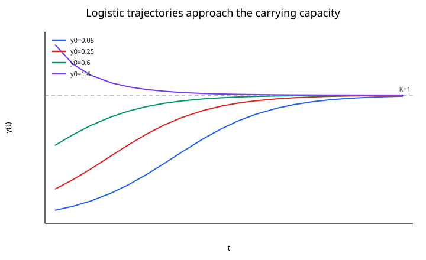
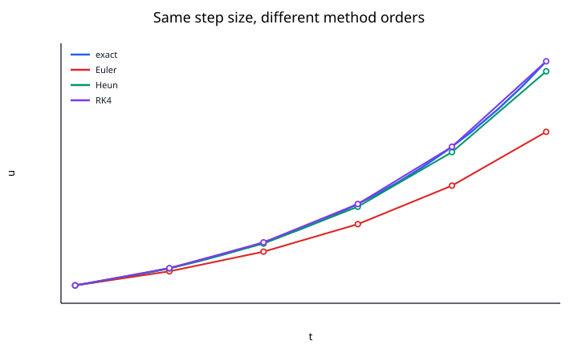

An ordinary differential equation (ODE) relates an unknown function of one independent variable to one or more of its derivatives. ODEs are the natural language of dynamical systems: they describe how a state changes when its instantaneous rate of change is known.
A general $n$th-order ODE can be written as
$$ F\left(t, y, y', \ldots, y^{(n)} \right) = 0. $$
The word ordinary means that derivatives are taken with respect to a single independent variable. If several independent variables appear, the corresponding equation is a partial differential equation.
A common first-order form is
$$ y'(t) = f(t,y(t)), \qquad y(t_0) = y_0. $$
At every point $(t,y)$, the function $f$ specifies the slope of a possible solution curve. The initial condition chooses one trajectory from that slope field.
Autonomous problems have the form
$$ y' = f(y), $$
so the direction of motion depends only on the current state.

For example, the logistic equation
$$ y' = r y\left(1 - \frac{y}{K}\right) $$
has equilibria at $y=0$ and $y=K$. When $0<y<K$, the derivative is positive; when $y>K$, it is negative. This qualitative information already reveals the long-term behavior without solving the equation explicitly.
An initial value problem (IVP) specifies all required conditions at one point. For a second-order ODE,
$$ y'' = g(t,y,y'), $$
a typical IVP is
$$ y(t_0) = y_0, \qquad y'(t_0) = v_0. $$
A boundary value problem (BVP) specifies conditions at different locations, for example
$$ y'' + y = 0, \qquad y(0) = 0, \qquad y(1) = 1. $$
IVPs are naturally advanced forward or backward in the independent variable. BVPs usually require different numerical ideas such as shooting or finite differences.
The order is the highest derivative present.
A linear $n$th-order ODE has the form
$$ a_n(t)y^{(n)} + \cdots + a_1(t)y' + a_0(t)y = g(t). $$
The unknown function and its derivatives appear only linearly.
Examples:
$$ y' + 2y = \sin t $$
is linear, while
$$ y' = y^2 - t $$
and
$$ y'' + \sin y = 0 $$
are nonlinear.
A linear equation is homogeneous when $g(t)=0$. Otherwise it is nonhomogeneous.
Numerical solvers are usually written for first-order systems. Any higher-order ODE can be rewritten in that form.
For
$$ y'' + c y' + k y = 0, $$
define
$$ u_1 = y, \qquad u_2 = y'. $$
Then
$$ u_1' = u_2, $$
$$ u_2' = -k u_1 - c u_2. $$
So the second-order scalar problem becomes
$$ \mathbf{u}' = \mathbf{f}(t,\mathbf{u}). $$
The same conversion works for arbitrary order.
For
$$ y' = f(t,y), \qquad y(t_0) = y_0, $$
a standard local result is the Picard--Lindelof theorem. Roughly, if:
then the IVP has a unique local solution.
A Lipschitz condition in $y$ means there is a constant $L$ such that
$$ |f(t,y_1) - f(t,y_2)| \le L|y_1 - y_2|. $$
This condition prevents nearby solution curves from splitting unpredictably.
Some ODEs have closed-form solutions. Many important nonlinear systems do not.
For example,
$$ y' = ay $$
has the exact solution
$$ y(t) = y_0e^{a(t-t_0)}. $$
But once $f$ becomes nonlinear, coupled, discontinuous, or expensive, numerical integration is often the practical route.
Common explicit methods include:
Their accuracy can differ dramatically at the same step size.

A one-step method advances by
$$ u_{n+1} = \Phi_h(t_n,u_n). $$
Two distinct errors are useful:
A method of global order $p$ typically satisfies
$$ \max_n |u(t_n) - u_n| = O(h^p) $$
on a fixed interval as $h\to0$.
Euler has order $1$, Heun order $2$, and classical RK4 order $4$.
Accuracy alone does not guarantee a good numerical solution.
For the test equation
$$ y' = \lambda y, $$
a numerical method produces
$$ y_{n+1} = R(h\lambda)y_n, $$
where $R$ is the method's stability function. Stability requires the numerical amplification to behave consistently with the exact solution.
A problem is called stiff when rapidly decaying modes force explicit methods to use very small steps for stability even though the physically interesting solution evolves on a much slower time scale.
In stiff regimes, implicit methods such as backward Euler, BDF schemes, or implicit Runge--Kutta methods are usually preferred.
Modern ODE solvers rarely use a single fixed $h$ everywhere. Instead they estimate local error and adapt the step size:
Embedded Runge--Kutta pairs, such as RK45, obtain two approximations of different orders from related stage evaluations and use their difference as an error estimate.
$$ y' = ay. $$
The sign of $a$ determines growth or decay.
$$ P' = rP\left(1 - \frac{P}{K}\right). $$
The parameter $K$ is the carrying capacity.
$$ x'' + \omega^2x = 0. $$
As a first-order system:
$$ x' = v, \qquad v' = -\omega^2x. $$
$$ x'' + 2\zeta\omega x' + \omega^2x = 0. $$
The damping ratio $\zeta$ controls whether the motion is underdamped, critically damped, or overdamped.
When solving an ODE numerically: